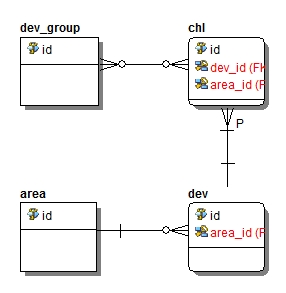

设备信息存储位置：
system.db
区域表
area
| id | integer primary key autoincrement |
| pid | integer |
| name | char(64) |
| path | text |
pid为父区域的id号
path为从根区域到本区域的路径，如本区域节点id为5路径经过了0-1-3-4
这几个节点，则path为0|1|3|4|5|
表创建代码
设备表
dev
| id | integer primary key autoincrement |
| area_id | integer |
| address | char(64) |
| port | integer |
| http | integer |
| eseeid | char(32) |
| username | char(32) |
| password | char(32) |
| name | char(64) |
| channel_count | integer |
| connect_method | integer |
| vendor | text |
area_id为设备所在区域的id，与表area的id关联
vendor为设备厂商信息，该信息与设备最终使用的协议相关，当前vendor取值为"JUAN IPC"、"JUAN DVR"、"ONVIF"三种
表创建代码
通道表
chl
| id | integer primary key autoincrement |
| dev_id | integer |
| channel_number | integer |
| name | char(64) |
| stream_id | integer |
dev_id为通道所属设备，与表dev的id关联
表创建代码
分组表
dev_group
| id | integer primary key autoincrement |
| name | char(64) |
表创建代码
组-通道关系表
r_chl_group
| id | integer primary key autoincrement |
| chl_id | integer |
| group_id | integer |
| name | char(64) |
chl_id为该关系中相关通道，与表chl的id关联。
group_id为该关系中相关组，与表dev_group的id关联。
表创建代码
设备信息ER图如下所示
